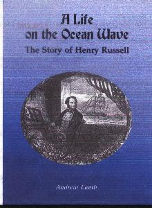

| Dated Songs | Undated Songs | Derivative Works | Arrangements |
Instrumentals | Oratorio | | Opera | Books
|
Henry Russell was a popular baritone singer, composer, and pianist, born in in Sheernes, England on 24 December 1812 and died in London, England on 8 December 1900. His mother's name was Sarah Levin born in Konigsberg, Russia. He studied composition with Gioachino Antonio Rossini (1792-1868), Vincenzo Salvatore Carmelo Francesco Bellini (1801-1835) and Dominico Gaetano Maria Donizetti (1797-1848), and singing with Michael William Balfe (1808-1870). During 1833-1841 he was an organist at the 1st Presbyterian Church of Rochester, NY. During 1837-1841, he toured, as a piano accompanist, for the singer William Vincent Wallace (1812-1860). He returned to England circa 1845. Rusell was married twice: first to Isabella Russell (born 1835 in the USA), and second to Hannah de Lara also known as Emma Landon Ronald, born in 1844 in Stepney, London, married in 1889. He had two brothers named J. Russell and George Henry Russell. From his first marriage, his children were Henry Loyd Russell (1837, in Albany, New York; to ???, who became a Vicar in the Anglican Church); Charles Kirkman Russell, born in 1842, died at age 3; William Clark Russell, born in 1844 in Carlton Hotel, New York, became a novelist who wrote 57 novels (his son Herber Russell, was Knighted in 1921, also a novelist and journalist reported from Gallipoli, and travelled with the Prince of Wales, Edward VIII); Frances Macella Russell, born in 1845 in Paddington, London; John Henry Russell, born in 1849 in Boulogne, France, became a diamong prospector in South Africa; and Emma Russell, born in 1854 in Boulogne, France. From his second wife, his children were Henry Ronald Russell, born in 1871-1837, becaume a opera impresario (he had two sons: Henry Tosti Russell and Sheridan Russell); Sir Landon Ronald Russell (1873-1938), composed some 200 songs. A George Alexander Russell (1880-1953) may also be related to him. His most popular songs were Woodman! Spare That Tree! (1837), The Ivy Green (1838), The Old Arm Chair (1840), Our Native Song (1841), A Life by de Galley Fire (1848) and Cheer, Boys, Cheer! (1850). Read contemporary comments about Russell. An excellent dissertation about him is Henry Russell in America: Chutzpah and Huzzah (1975) by John Anthony Stephens. Russell is also described on pages 60-67 of Russell Sanjek's book American Popular Music and Its Business: Vol. II (1988). Special thanks to John Anthony Stephens (the author of the Russell dissertaion mentioned above) for sending photocopies of 37 of Russell's scores. Indeed, any such help from anyone would be greatly appreciated! Special thanks to Patricia Oliver for her extensive research (as of 8 Feb 2008) , as a distant relative to the Russell family, for providing invaluable Russell family info above. Special thanks to Andrew Lamb for sending my a copy of his book Life on the Ocean Wave, a biography of Henry Russell which Patricia Oliver's info above, is partly derived from. His extensive chronological lists of Russell's works has greatly helping to authoritatively list Russell's complete works on this webpage. NOTE: the Source* columns below refer either to: (1) The Lester S. Levy Collection by Box/Item number; (2) the Library of Congress' LCCN or CALL numbers in brackets (which can be used to request copies from the Photoduplication Services Division there); (3) if just labeled "LoC" then it is available at the American Memories webpages at the Library of Congress; (4) Duke University; (5) UNC-CH refers to the University of North Carolina at Chapel Hill Music Library; (6) BML refers to the British Museum Music Library; Howard refers to John Tasker Howard and his book Our American Music (1929), particularly pp. 170-174. |
| 1820 | 1821 | 1822 | 1823 | 1824 | 1825 | 1826 | 1827 | 1828 | 1829 |
| 1830 | 1831 | 1832 | 1833 | 1834 | 1835 | 1836 | 1837 | 1838 | 1839 |
| 1840 | 1841 | 1842 | 1843 | 1844 | 1845 | 1846 | 1847 | 1848 | 1849 |
| 1850 | 1851 | 1851 | 1853 | 1854 | 1855 | 1856 | 1857 | 1858 | 1859 |
| 1860 | 1861 | 1862 | 1863 | 1864 | 1865 | 1866 | 1867 | 1868 | 1869 |
| 1870 | 1871 | 1872 | 1873 | 1874 | 1875 | 1876 | 1877 | 1878 | 1879 |
| 1880 | 1881 | 1882 | 1883 | 1884 | 1885 | 1886 | 1887 | 1888 | 1889 |
| 1890 | 1891 | 1892 | 1893 | 1894 | 1895 | 1896 | 1897 | 1898 | 1899 |
Dated Songs | ||
| Title | Words | Source* |
|---|---|---|
c1828 | ||
| The Toscin of War [circa] | J. M. F. Dodgson | London: J. Russell [BL, 15 Nov 1876] |
| My Broken Lute | J. M. F. Dodgson | London: A. Pettet [BL, 31 Mar 1871] |
| My Father's in the Battle Gone | G. Higham | London: Bedford Musical Depository |
c1832 | ||
| The Azure Eye [Prize Ballad] | A. T. McDouall | London: W. Wybrow |
| The Old Abbey Walls | A. T. McDouall | London: Musical Bouquet Albut (1856) |
| The Pirate's Bride | J. Delma | London: J. Duncombe [BL, n.d., p.n. 183] |
| Let Other's Rejoice in the Merry Moonlight (Bandit's Song) [Music revised for Come, Brothers, Arouse! (THE BRIDE'S BAND, 1834] | Russell | London: G. Walker & Sons [Times, 24 Nov 1832] |
| When I Rov'd a Young Highlander (from Times) [24 Nov] | Lord Byron | London: G. Walker & Son |
1834 | ||
| Cottage Courtship | Letitia Elizabeth Landon | Fisher's Drawing Room Scrap Book of 1835 [London, (composed late 1834); dated 1835, pages 41-42] |
| Ivy Bridge | Letitia Elizabeth Landon | Fisher's Drawing Room Scrap Book of 1835 [London, (composed late 1834); dated 1835, pages 29-30] |
| The Merry Spring (circa 1834) | Charles Mackey | os59@UNC-CH; 116/029 |
| The Orphan Ballad Singers (Ballad) | Letitia Elizabeth Landon [Miss Tracy?] | Fisher's Drawing Room Scrap Book of 1835 [London, (composed late 1834), dated 1835, pages 13-14]; [1842] Philadelphia: John F. Nunns |
1835 | ||
| Believe Not the Tales They Have Told Thee of Me (Descriptive Ballad) | Leigh Cliffe | H-1320@BM; LoC |
| The Pirate's Bride | J. Delma | ??? |
1836 | ||
| Come Maidens Come (Song) (Tyrolien) (circa 1836-9) | Charles Mackay, 1814-1889, Esq. | New York: Firth & Hall; LoC; NYPL |
| The Dove of Noah (A Sacred Melody) (circa 1836-9) | Charles Mackay, 1814-1889, Esqr. | New York: Firth & Hall; LoC; NYPL |
| The Lady Leaves the Banquet Hall (A Romance of Palestine) (Ballad) (circa 1836) | Charles Arnold, Esqr. | New York: Firth & Hall; Dr.238@NLC |
| The Sabbath Eve (Sacred Song) (circa 1832-42) | Rev. Richard Cattermole, B. D. | New York: Firth & Hall |
| We Have Been Friends Together (Ballad) | Hon. Mrs. Norton | New York: J. L. Hewitt & Co.; The Book of a Thousand Songs (1918) |
| Some Love to Roam O'er the Dark Sea Foam (Song) [20 May] | Charles Mackay Esq, 1814-1889 | 122/013; 122/092; (1837) ns4,3@UNC-CH |
| Wind of the Winter Night (Descriptive Poem) [26 Sep] | Charles MacKay, 1814-1889 | 122/112 |
1837 | ||
| Come Brothers Arouse (Song)
(from the opera The Bride's Band) |
William B. Bernard, Esqr. | 122/018; LoC; NYPL; H-2345#378@BLM |
| I Love the Night (Song) [20 May] | George Pope Morris, 1802-1864 | 121/045; LoC; NYPL; H-2345#108@BLM |
| The Ocean, or, The Merry Mariners (Song) (aka Blow Blow Wild Winds Blow) | anon. | New York: Hewitt & Jaques |
| Washington's Tomb (An Ode to the memory of Washington) |
Mrs. L. H. Sigourney | 003/155 |
| When I Rov'd a Young Highlander (Song) | George Gordon, Lord Byron, 1788-1824 | 063/133 |
| Woodman! Spare That Tree! | George Pope Morris, 1802-1864 | 121/101-8, 10-13 |
1838 | ||
| A Christmas Carol (aka I Care Not for Spring on His Fickle Wing) | Charles Dickens (aka "BOZ") | 063/023 |
| A Life on the Ocean Wave | Epes Sargent, 1812-1880 | 122/050; 181/143; 182/018; os60,15@UNC-CH; LoC; NYPL; H-132@BML |
| On the Brave Who Have Fallen No Tear We Bestow (aka The Patriot's Welcome) (Ballad) | Miss Jane Anne Porter | New York: Hewitt & Jaques |
| Our Way Across the Mountains, Ho! | Charles Mackay, Esqr., 1814-1889 | 122/082 |
| The Charter Oak (Ballad) [25 Feb] | Mrs. Sigourney | 056/012; 056/013; 056/013a; NYPL |
| The Corsair Boat Glee [11 May] A GLEE for four voices. |
Russell | 026/023 |
| The Ivy Green | "Boz" (Charles Dickens) | 063/060-1; LoC; NYPL; H-1320@BML |
| The Minstrel of the Tyrol (Song) | Jonas B. Phillips, Esq. | New York: James L. Hewitt; LoC; H-2345#387@BML |
| The Wreck of Mexico (Decriptive Ballad) | H. Harrington | Ref: Howard, p. 163 |
| We Met in Other Years Love | Ione | reprinted in One Hundred Songs of Henry Russell, pp. 49-51 |
1839 | ||
| The Dying Legacy (Ballad) | J. M. Church Esq. | New York: Hewitt & Jaques; LoC; NYPL |
| The Old Bell (Ballad) | 'W' | 020/094 |
1840 | ||
| I Love, I Love the Free (Song) [27 Apr] | Eliza Cook, 1818-1889 | 125/033,40-1; os45,15@UNC-CH; LoC; NYPL; H-2345#384@BML; 100008197@LoC/IHAS-HSM |
| My Old Wife (Ballad) | Jonas B. Phillips Esq. | New York: Hewitt & Jaques |
| Rockaway; or, On Old Long Island's Sea-Girt Shore (Ballad) [13 Nov] | Henry John Sharpe | 124/065-8 |
| The Fisher Boy Merrily Lives (Song) [13 Mar] | Eliza Cook, 1818-1889 | 123/030-1; 181/094; NYPL |
| The Mad Girl's Song (Descriptive Work) [28 Jul] | T. C. Grattan, Esq. | 055/026; LoC; NYPL; H-2345#385 & 386@BML |
| The Maniac (Descrtiptive Work) [2 May] | Russell and Monk Lewis | 055/029; 055/030; LoC; NYPL; H-1320@BML |
| The Old Arm Chair [7 Feb] | Eliza Cook, 1818-1889 | 055/041; 124/027-8; 097/228-231, 238, 240, 242, 244-5, 247-52, 254, 261-3, 266, 269-70, 272; 124/024-31, 36; 131/066 |
| The Old Farm Gate (Ballad) [4 Dec] | Eliza Cook, 1818-1889 | 024/038-42 |
| The Old Water Mill (aka The Old Mill Stream) (Ballad) [11 Dec] | Eliza Cook, 1818-1889 | 124/049-051 |
| The Total S'iety (A Comic Song [11 Dec] | Russell | 099/065 |
1841 | ||
| I'm Afloat! I'm Afloat! (Song) [1 Feb] | Eliza Cook, 1818-1889 | 175/029; 181/137-8; 181/143; LoC; NYPL; H-1320@BML |
| Let's Be Gay (aka Let Us Be Gay! or The Laughing Song) (Temperance Song) [29 Oct] | Russell? | 098/140; LoC; NYPL; H-1320@BML |
| Major McPherson Was a Very Nice Man (Comic Song) [2 Jun] | Russell? | 049/049; LoC |
| My Mother's Bible (Ballad) [9 Aug] | George Pope Morris, 1802-1864 | 123/081; 101/086-7; LoC; NYPL; H-1320@BML |
| Nature's Fine Old Gentleman (Ballad) [11 Dec 1844] | Russell? | 125/082 |
| Not Married Yet! (Comic Song) [11 May] | George Pope Morris, 1802-1864 | New York, NY: J. F. Atwill |
| Oh! This Love! (After the Manner of Jesse McFarlane) [29 Dec] | George Pope Morris, 1802-1864 | 124/023; 050/070 |
| Old King Time (Ballad) [26 Jun] | Russell? | 124/045 |
| Our Native Song (A National Refrain) | Eliza Cook, 1818-1889 | 015/086 |
| The Chieftain's Daughter (Ballad) [4 May] | George Pope Morris, 1802-1864 | 123/018-9; LoC; H-2345#74@BML |
| The Dismissed (Comic Song) [c1841; 26 Jan 1842] | George Pope Morris, 1802-1864 | New York: Firth & Hall, Plate No. 305; LoC; NYPL |
| The Gambler's Wife (A Descriptive Ballad) | Dr. R. Coates | 125/021; 1884-06779@LoC; NYPL; H-1320@BML |
| The Heart That's True (Ballad) | Eliza Cook, 1818-1889 | 035/036; LoC; NYPL |
| The Mother Who Hath a Child at Sea (Ballad) [23 Jun] | Russell? | 182/070-2; LoC; Dr.27@NLC |
| The Old Night Lamp (aka The Rushlight) (Ballad) [2 Aug?] | Eliza Cook, 1818-1889 | Boston: Henry Prentiss |
| The Old Schoolhouse (Ballad) [20 Apr] | Park Benjamin, 1809-1864 | 124/046-7 |
| The Old Sexton (Song) [19 Mar] | Park Benjamin, 1809-1864 | 124/048-48a; a1889@Duke; white1-18@UNC-CH |
| The Pilgrim's Address to the Deity (Sacred Song) | Henry John Sharpe | 124/056 |
| The Soldier and His Bride (Ballad) [21 Jul] | George Pope Morris, 1802-1864 | 016/016 |
| We Were Boys Together (Ballad) [15 Apr] | George Pope Morris, 1802-1864 | 124/090 |
| When the Wild Wind Blows (A Song of the Waves) | Russell? | Philadelphia: G. E. Blake |
| Will Nobody Marry Me? (aka Heigh Ho for a Husband) (Comic Song) [29 Dec] | George Pope Morris, 1802-1864 | 050/091-2; 049/118 |
1842 | ||
| The Founding of the Bell (Song) (c.1842-4) | Charles Mackay, 1814-1889 | Boston: Oliver Ditson; LoC; H-1320@BML |
| The Indian Hunter (Song) [21 Oct] | Eliza Cook, 1818-1889 | 165/010; 119/026-9; LoC; NYPL; H-1320@BML |
| The Old Clock (Ballad) [21 Dec] | Eliza Cook, 1818-1889 | ??? |
| The Poor Man's Friend (A Descriptive Scena) [11 Oct] | Eliza Cook, 1818-1889 | 179/019 |
| The Ship on Fire (A Descriptive Scena) [1 Oct] | Charles Mackay, Esq., 1814-1889 | 179/113; 183/069-70 |
1843 | ||
| I Love to Dwell in the Bosom's Cell (The Lay of Hope) (Song) | Leigh Cliffe Esq. | LoC; NYPL; London: Musical Bouquet |
| If I Had But a Thousand a Year; or, Robin Ruff (Ballad) [1 Dec]] | Russell | 049/032-3; 1875-13049@LoC; NYPL |
| Land Ho! (Song) [29 Jun] | George Pope Morris, 1802-1864 | 182/008; LoC |
| The Dream of the Reveller; or, The Three Houses (A Cantata) (Descriptive Work) | Charles Mackay, 1814-1889 | New York: James L. Hewitt & Co.; New York: Firth & Hall; New York: Wm. Hall & Son; os35,2@UNC-CH; LoC; H-1320@BML |
| The First Dear Thing That I Ever Loved (Ballad) [25 Dec] | Rev. A. C. Coxe | Boston: E. H. Wade; LoC; NYPL |
| [Carlo,] The New Foundland Dog (Descriptive Ballad) [1 Dec] | F. W. N. Bailey, Esqr. | 182/096; 1875-13050@LoC; H-1320@BM |
| The Rising Sun (Ballad) | Henry John Sharpe | 124/064 |
1844 | ||
| A Life in the West (Song) [5 Sep] | George Pope Morris, 1802-1864 | 123/067; LoC; H-2345#487@BML |
| Oh! Weep Not (Song) (Answer to The Old Arm Chair) | Charles Jefferys, 1807-1865 | 32278011726308@Miss.St.Univ. |
| South Carolina Plantation Song (aka The Tenasee Plantation Song) [12 Oct] | Russell | A & H, Plate No. 1839 |
| The Main Truck or A Leap for Life (A Nautical Ballad) [24 Jun 1845] | George Pope Morris, 1802-1864 | 182/039-40; LoC; NYPL; H-2345#521 & 522@BML |
| The Main, the Main, the Flowing Main [3 Sep] | Henry John Sharpe, Esq. | 182/038 |
1845 | ||
1846 | ||
| A Happy Home Is Mine | A. B. Reach | Boston: Oliver Ditson, Plate No. 1114 |
| Little Fools and Big Ones | ??? | ??? |
| The Pauper's Drive | Thomas Noel, 1799-1861 | ??? |
| There's a Good Time Coming Boys | Charles Mackay, 1814-1889 | ??? |
| Tubal Cain (also published in 1856 from Russel's Favorites: A collection of Popular Songs) | Charles Mackay, 1814-1889 | Boston: Oliver Ditson |
1849 | ||
| There's Room Enough for All (Emigration Song) | E. L. [L. F.?] Blanchard, 1820-1859 | The Musical Treasury: Plate No. 507-8; Boston: Oliver Ditson, Plate No. 1742 |
1850 | ||
| Cheer Boys Cheer | Charles Mackay, 1814-1889 | 046/063; [1861] conf372@Duke |
| The Kiss (Ballad) | Henry H. Paul | Philadelphia: C. F. Hupfield & Son |
1851 | ||
| The Slave Ship | Russell | 183/077 |
| The Wife's Dream | Lady Blessington | Boston: Oliver Ditson, Plate No. 2286 |
1852 | ||
| Henry Russell's New American Quadrilles (Dance Music Embracing All the New Negro Melodies) | none | Boston: Oliver Ditson, Plate No. 2286 |
| Henry Russell's Uncle Tom's Cabin Quadrille (contains: The Chase, Eliza, The Slave Sale, and Eva) | none | London: Musical Bouquet, No. 376 |
| The Emmigrant's Progress Quadrille | none | London: Musical Bouquet, No. 375 |
1856 | ||
| Fresh Blows the Breeze (1856 from Russel's Favorites: A collection of Popular Songs) | Russell | Boston: Oliver Ditson |
| John Littlejohn (c1856) | Charles Mackay, 1814-1889 | Boston: Oliver Ditson |
| Pledge Me in Ruby Wine | Russell | ??? |
| Strike, Men, Strike! | S. J. Meany | London: Musical Bouquet, Nos. 688-699 |
| The Tee-Total Society (1856 from Russel's Favorites: A collection of Popular Songs) | ??? | Boston: Oliver Ditson |
| When I Was a Little Child (1856 from Russel's Favorites: A collection of Popular Songs) | Charles Mackay, 1814-1889 | Boston: Oliver Ditson |
| Where There's a Will There's a Way (1856 from Russel's Favorites: A collection of Popular Songs) | Eliza Cook, 1818-1889 | Boston: Oliver Ditson |
1865 | ||
| Mother Take Me to the Ball To Night [13 Jun] | John Brougham | London: The Music Library Company |
1874 | ||
| She's From Cork | ??? | ??? |
1879 | ||
| Visions of the Past (Song and Chorus) [although omposed by "Russell", it is not confirmable if by Henry Russell. I believe it is doubtful but I like the song anyway |
Alma | New York: New York Music-Publishing Co.; 15205@LoC |
1888 | ||
| Our Empress Queen | C. Scott | ??? |
1897 | ||
| Victoria, Queen of Our Nation | ??? | ??? |
Undated Songs | ||
| Almighty Spirit (c1845+) | Eliza Cook, 1818-1889 | ??? |
| Be Not the First to Cast the Stone (c1845+) | Eliza Cook, 1818-1889 | ??? |
| Daily Telegraph Christmas Carol (c1845+) | Clement Scott | ??? |
| Dear Janet (Ballad) (pre-1845) | Frederick West | 114/060; LoC |
| Eliza the Slave Mother (c1845+) | Eliza Cook, 1818-1889 | ??? |
| England's Welcome to All Nation's (c1845+) | F. A. Davidson | ??? |
| Eva's Farewell (c1845+) | Eliza Cook, 1818-1889 | ??? |
| Fanny Mavoreen (c1845+) | Eliza Cook, 1818-1889 | ??? |
| Farewell to Freedom (c1845+) | Henry Dayton | ??? |
| Far, Far Upon the Sea! (from the Entertainment of The Far West; or The Emigrant's Progress from the Old World to the New) (Musical Bouquet Nos. 363 & 364) (c1845+) | Charles Mackay, L.L.D., 1814-1889 | 181/087-8 |
| Festival Song of the World's Fair | Charles Mackay, 1814-1889 | 039/038 |
| Forward Onward Never Despair (c1845+) | James Bath | ??? |
| Gather Ye Nations; or, The Festival of Labor (c1845+) | Charles Mackay, 1814-1889 | ??? |
| Gin Fiend (c1845+) | Charles Mackay, 1814-1889 | ??? |
| God Bless the Fire Brigade (c1845+) | George Douglas Phillips | 179/064 |
| Guard Our Homes (c1845+) | ??? | ??? |
| He Comes! The Shepherd Minstrel Comes (Sacred Desriptive Work) (c1830s) | Charles Mackay, 1814-1889 | Dr.235@NLC |
| Hope's Sepulcher (c1845+) | ??? | ??? |
| Hope a Little Longer (c1845+) | John Bath | ??? |
| I Love the Man With a Generous Heart (c1830s) | ??? | Ref: Howard, p.163 |
| Land! Land! Land! (from the Entertainment of The Emigrant's Progress; No. 367 Musical Bouquet) (c1845+) | Charles Mackay, L.L.D., 1814-1889 | 119/049 |
| Little Gay Deceiver (aka The Little Maid) (c1845+ | Russell | ??? |
| Little Topsy's Song (from The Musical Bouquet, No. 419) (c1845+) | Eliza Cook, 1818-1889 | 119/063 |
| Long Parted Have We Been (aka They're Coming With the Flowers) (from The Musical Bouquet, Nos. 371 & 372) (for the Entertainment The Emigrant's Progress) (c1845+) | Charles Mackay, L.L.D., 1814-1889 | 119/064 |
| Man the Life Boat (c1845+) | Mrs. Crawford | 182/046 |
| Many Changes I Have Seen (from The Musical Bouquet, Nos. 564 & 565) (c1845+) | Charles Mackay, L.L.D., 1814-1889 | 120/002 |
| Mighty Niagra (c1845+) | Charles Mackay, L.L.D., 1814-1889 | ??? |
| Not Lost (c1845+) | Rev. J. G. Gilmore | ??? |
| Oh Why Should We Bewail the Dead (Sacred Bong) (c1830s) | Charles Mackay, 1814-1889 | 175/156 |
| Olden Time and Present Time (c1845+) | ??? | ??? |
| Poor Uncle Tome (c1845+) | Eliza Cook, 1818-1889 | ??? |
| Pull Away Cheerily! (The Gold Digger's Song) (from the entertainments The Two Lands of Gold and A Night in the Lands of Gold) (c1845+) | Harry Lee Carter | 032b/086 |
| Quiet Little Man (c1845+) | Charles Mackay, 1814-1889 | ??? |
| Resignation (Sacred Ballad) (c1832-42) | Charles Mackay, 1814-1889 | New York: Firth & Hall |
| Rouse, Brothers Rouse (c1845+) | Charles Mackay, L.L.D, 1814-1889 | Musical Bouquet Nos. 560 & 561, pp. 1-6 |
| Sir Harold the Hunter (c1852) | Eliza Cook, 1818-1889 | Musical Bouquet Nos. 478 & 479 |
| Sound Britons Sound (aka The Song of Progress) (c1845+) | Charles Sheard | ??? |
| Strike Men Strike (c1845+) | S. J. Meany | ??? |
| Sunny Days Will Come Again (Song) (c1845+) | E. Ransford | Boston: Oliver Ditson & Co., Plate No. 22481 |
| Sunshine After Rain (c1845+) | Charles Mackay, 1814-1889 | ??? |
| Sweet Green Leaves (music, circa 1850s, by Eliza Cook, 1818-1889; sung by the Russell family in their vocal entertainments) | Eliza Cook, 1818-1889 | London: Musical Bouquet, No. 439, pp. 23-26 |
| The African Village (c1845+) | Charles Mackay, 1814-1889 | ??? |
| The Azure Eye (c1845+) | A. T. McDouall | ??? |
| The Ballad Singers (c1845+) | Miss E. W. Tracey | ??? |
| [The] Canadian Sleigh Song (c1845+) | Charles Mackay, 1814-1889 | 118/046 |
| The Emigrant (c1845+) | J. Coutts | ??? |
| The English Emigrant (c1845+) | Eliza Cook, 1818-1889 | ??? |
| The Exile (c1845+) | Charles Mackay, 1814-1889 | ??? |
| The Feast of the Despots (c1845+) | Charles Mackay, 1814-1889 | ??? |
| The First Cannon Shot (c1845+) | Charles Mackay, 1814-1889 | ??? |
| The Good Is Great (c1845+) | Rev. J. G. Gilmore | ??? |
| The Happy Change (c1845+) | L. M. Thornton | ??? |
| The Land of St. Patrick Forever (Erin-Go-Bragh) | John Brougham | 119/050 |
| The Lash | C. Sears Lancaster | ??? |
| The Lords of the Forest (c1845+) | Charles Mackay, 1814-1889 | ??? |
| The Old Abbey Walls (c1845+) | A. T. McDouall | ??? |
| The Parting Tear (aka Farewell a Last Farewell) (c1845+) | Charles Mackay, 1814-1889 | ??? |
| The Sea Is Before Us (c1845+) | ??? | ??? |
| The Sea King's Burial (c1845+) | Charles Mackay, 1814-1889 | ??? |
| The Slave Auction (c1845+) | E. L. Blanchard | ??? |
| The Slave Chase (c1845+) (from the Entertainment Negro Life) | Angus B. Reach, Esq. | London: Musical Bouquet, No. 370; 100008203@LoC/IHAS-HSM |
| The Slave Sale (aka Come Who Bids) (c1845+) | Angus B. Reach, Esq. | ??? |
| The Song of the Shirt (c1845+) | Mrs. F. A. Davidson | ??? |
| The Struggle for Fame (c1845+) | Charles Mackay, 1814-1889 | ??? |
| The True Men of Old (c1845+) | Charles Mackay, 1814-1889 | ??? |
| The World Is on the Move (c1845+) | E. L. Blanchard | ??? |
| The Young and the Gay (c1845+) | Rosaland Davis | ??? |
| The Song of the Scoffold (c1845+) | ??? | ??? |
| Those Locks Those Ebon Locks | ??? | Ref: Howard, p. 163 |
| Tis Eve on the Ocean (c1850+) | ??? | ??? |
| To the West! to the West! to the Land of the Free! (from the entertainment The Emigrant's Progress, or Life in the Far West) (c1845+) | Charles MacKay, 1814-1889 | 016/070-1 |
| Two Boats (c1845+) | Ada Cambridge | ??? |
| Up for the Night (c1845+) | S. J. Meany | ??? |
| Welcome Home (c1845+) | Harry Carter | ??? |
| Wery Pekooliar;o, The Lisping Lover (c1845+) | ??? | ??? |
| When Is a Man Less Than a Man? (c1845+) | Charles Mackay, 1814-1889 | ??? |
Derivative Works | |||
| Title | Year | Words | Original |
|---|---|---|---|
| A Fine Old Kentucky Gentleman | c1845+ | by a gentleman from South Carolina | A Fine Old English Gentleman |
| A Sober Spouse for Me (A Temperance Fireside Song for the Ladies) [13 Jan] | 1844 | George Pope Morris, 1802-1864 [099/023] | Some Love to Roam Over the Dark Sea Foam [099/023] |
| A Song for a Stormy Night | c1845+ | Charles Mackay, 1814-1889 | Our Way Across the Mountains, Ho |
| A Song for the Man (A Henry Clay Ballad) (aka A Song for the Chief) [11 Jul] | 1844 | George Pope Morris, 1802-1864 [004/015] | A Brave Old Oak (melody by Loder) |
| By the Crimson Hue of the Fair Sunset | c1845+ | Leigh Cliffe Esq. | I Love the Night |
| Come Fill the Cup | c1845+ | Henry John Sharpe | Charter Oak |
| God Bless the Widow's Son | c1845+ | Mrs. Signourney | We Have Been Friends Together |
| Health Is Wealth | c1845+ | W. Bartholomew | If I Had But a Thousand a Year |
| Home of Her Childhood Days | c1845+ | Eliza Cook, 1818-1889 | The Lady Leaves the Banquet Hall |
| I'm a Gent | c1845+ | ??? | I'm Afloat |
| I Love It, My Own Fireside | c1845+ | ??? | The Old Armchair |
| Lament for Wellington | c1845+ | Eliza Cook | Washington's Tomb |
| Let Others Rejoice in the Merry Moonlight | c1845+ | ??? | Come Brothers Arouse |
| My Father's Song | c1845+ | Edward Gill | The Dying Legacy |
| My Mother's Portrait | c1845+ | Leigh Cliffe | The Old Farm Gate |
| My Old Cottage Home | c1845+ | ??? | The Old Farm Gate |
| My Own Dear Wife | c1845+ | Leigh Cliffe | My Old Wife |
| Oh! Forge Not a Chain for the Brave | c1845+ | Eliza Cook, 1818-1889 | On the Brave Who Have Fallen No Tear We Bestow; or The Patriot's Welcome |
| Oh Give Your Heart to Me | c1845+ | ??? | We Have Been Friend Together |
| Old English Hospitality | c1845+ | Charles Swain | Rockaway |
| Old King Cole | c1845+ | ??? | Tubal Cain |
| So Young and So Lovely | 1848 | ??? | The Mother Who Hath a Child at Sea |
| Song of the Mariners | c1845+ | Eliza Cook, 1818-1889 | I Love the Free |
| Song of the Southern Boys | 1861 | Adapted by Hermann L. Schneider [conf0372@Duke] | Cheer Boys Cheer |
| Take the Pledge | c1845+ | ??? | The Ivy Green |
| The Cry from the Courts | c1845+ | E. Blanchard | The Slave Auction |
| The Emigrant's Farewell (Ballad) [23 Dec] | 1842 | Leigh Cliffe, Esq. [123/024-5] | The Chieftain's Daughter |
| The Flag of the Free | c1845+ | Eliza Cook, 1818-1889 | Charter Oak |
| The Greenwood Tree | c1845+ | Charles Mackay, 1814-1889 | A Christmas Carol |
| The Happy Days of Childhood | c1845+ | George Pendrill | We Have Been Friends Together |
| The Husband's Dream | c1845+ | ??? | The Wife's Dream |
| The Infinitude of Mercy | c1845+ | Charles Mackay, 1814-1889 | The Sabbath Eve |
| The Old Abby Clock | c1845+ | Edward Gill | The Old Water Mill |
| The Old Church Bell (or Up With the Rooks Where None Can Reach) [No. 432 Musical Bouquet, pp. 89-92] | c1845+ | Eliza Cook, 1819-1889 | The Old Bell |
| The Real Staunch Teetotaler | c1845+ | ??? | A Fine Old English Gentleman |
| The Reeking Still | c1845+ | ??? | The Brave Old Oak (melody by Loder) |
| The Soldier's Grave | c1861 | D. Ottolengui; arr. by Hermann L. Schreiner [conf0368@Duke] | The Old Arm Chair |
| The Spirit and the Stream | c1845+ | Eliza Cook, 1818-1889 | The Old Arm Chair |
| The Village Green [23 Dec] | 1842 | Leigh Cliffe | The Old School House |
| The Wife's Song | c1845+ | A Lady | If I Had But a Thousand a Year |
| The Winds Are Free | c1845+ | Leigh Cliffe | I Love the Free |
| Think Not That I Forget, Love | c1845+ | Eliza Cook, 1818-1889 | We Met in Other Years |
| Traitor Spare That Flag | 1861 | W. T. Wetmore, M. D. [016/072@Levy; 200001710@LoC/IHAS-CWM] | Woodman Spare That Tree |
| War Song of the Texas Rangers | 1855 | Russell | I'm Afloat |
| When the Tempest Flies | c1845+ | Charles Mackay, 1814-1889 | Our Way Across the Mountain, Ho |
Arrangements | |||
| Title | Year | Words; Source* | Melody/Music |
|---|---|---|---|
| A Life by De Galley Fire | 1848 | anon.; 017/124 | Negro Melody |
| John Nott Why Not (Comic Song) | 1837 | ??? | ??? |
| My Heart's in the Highlands | 1837 | Robert Burns, 1759-1796; 063/092-3 | Russell and ??? |
| The Brave Old Oak (A Song of the Oak) | 1837 | H. F. Chorely; 122/013@Levy; 100008730@LoC/IHAS-HSM | Edward T. Loder |
| The Fine Old English Gentleman (A Song of the Olden Time) |
1836 | Russell; 148/056; 047/027 | Martin Luther? |
| The Friar of the Olden Time (Ballad) [aka "The Holy Friar" ("I Am a Friar of Orders Gray") | 1837 | John O'Keefe, 1747-1833 | New York: James L. Hewitt & Co.; William Reeves | , 1757-1815, (from "Merry Sherwood", a Robin Hood pantomime, 1795)
| The Spider and the Fly (Comic Song) (c1844) [24 Jun] | 1845 | Mary Botham; 106/179-80 | ??? |
Instrumentals | |||
| Title | Year | Comments | Source* |
|---|---|---|---|
| Eugenie Waltz / Imperial Marzurka | c1845+ | piano | H2345#420@BML |
| Indian Hunter Quick Step | 1844 | Arr. by Allen Dodsworth | 165/011-2 |
| Lord Dundreay Waltz | c1845+ | piano | BML |
| New American Quadrilles | c1845+ | piano | H2345#392@BML |
| The Rochester Union Grays Quick Step | 1839 | piano | 056/074-5 |
| Uncle Tom's Cabin Quadrilles | c1845+ | piano | H2345#379@BML |
| Woodman, Spare That Tree! | 1870 | arranged anonymously for Military Band | LoC |
Oratorio | |||
| The Skeptic's Dying Lament (Sacred Song) | 1838 | Dr. Young and Percy B. Shelly | Ref: Howard, p. 170 |
Opera | |||
| IL MARITO GELOSO [The Jealous Husband] [Naples' prize winner?] | 1833 | Naples, Italy? | Ref: Lamb: p. 346 |
| The Bride's Band | 1834 | various | Ref: Lamb: p. 346 |
Books | ||
| Title | Year | Comments |
|---|---|---|
| The Singers Friend: A Treatise on the Art of Singing [aka L'AMICO DEI CANTANTI] | 1835 | London: G. Luff [30 Aug 1860[; New York: Firth & Hall, 1 Franklin Square |
| Henry Russell's Vocal Music | 1843 | H1320@BM |
| Music Treasury. Vol. 4, Songs of Henry Russell | 1846 | London: G. H. Davidson; H2350@BM |
| One Hundred Songs by Henry Russell | 1856 | London: Musical Boquet; D856@BM; 11601b33@BM[1855]; (C374@BM[1860]; E1711@BM[1878]) |
| Cheer, Boys, Cheers! (Memories of Men and Music) | 1895 | autobiography; London: John Maqueen [also Da Capo Reprint]; and Best Books (ISBN 0722262310, 1 Jan 2001) |
|  |
A Life on the Ocean Wave: The Story of Henry Russell by Andrew Lamb (Croydon, UK: Fullers Wood Press, July 2007) 384 pp., (price thru booksellers) 40 pounds sterling ISBN-10: 095241961 ISBM-13: 978-0952414964 Please contact him directly for any more info. |